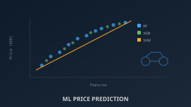
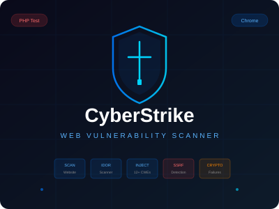
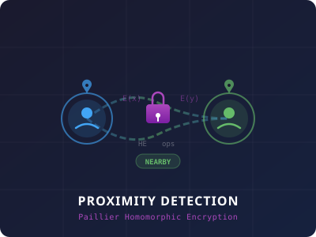

Domains of practice
Defensive Security
Offensive Security
Systems & Architecture
Analysis & Forensics
Work in security, systems, and analysis

Housing in Singapore
Data analysis and visualization of Singapore's housing market using Python

Parcel Flip Detection
IoT sensor system to detect and log package handling anomalies during delivery

OOP Game Engine Report
Team project report detailing engine architecture, patterns, and design decisions

Enterprise Network Design
Fault-tolerant, scalable Cisco network with VLANs, redundancy, and secure internet access

CPU Scheduling Algorithms
Comparing five different approaches to optimize process scheduling performance

FoodieFinder
Full-stack app to find halal and vegan food in Singapore using Dijkstra, Trie, and web scraping

Network Security Infrastructure
Designing and hardening a secure enterprise network with Cisco ASA firewall, IDS, TACACS+ AAA, and layered defences

Ethical Hacking
Exploiting a Minecraft server via Log4Shell and pen-testing a vulnerable web app for backdoor access

Machine Learning
Predicting motorcycle resale prices in Singapore using Random Forest, XGBoost, LightGBM, SVM, and CatBoost
Mobile Security
Trojanized Android social media app that secretly exfiltrates contacts, GPS location, and sensor data

CyberStrike
Chrome extension for automated web vulnerability scanning with 6 OWASP-aligned modules and a vulnerable PHP test site

Privacy-Preserving Proximity Detection
Client-server proximity detection using Paillier homomorphic encryption — checks if users are nearby without revealing exact locations
Internship — Shimano
Six-month internship at Shimano, working with IT infrastructure and operations

FP2 — IT Fundamentals
Fundamentals for IT Professionals — foundational computing and scripting

Portfolio I — Predictive Maintenance
Lite predictive maintenance system for machines and vehicles

Cloud Architecture
Scalable, resilient, and load-balanced web server infrastructure

Cyber Security Fundamental
Cross-Site Request Forgery attack analysis and exploitation using Burp Suite

Digital Forensics
Research on tools and methodologies that streamline the forensic investigation process

Final Year Project — Photographer Community
A web platform designed and built to connect photographers across Singapore
No projects in this category yet.